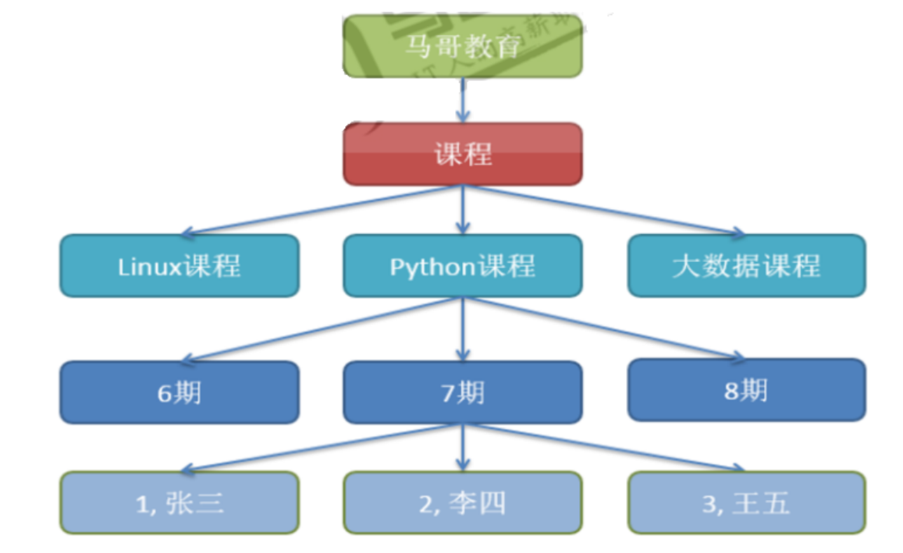
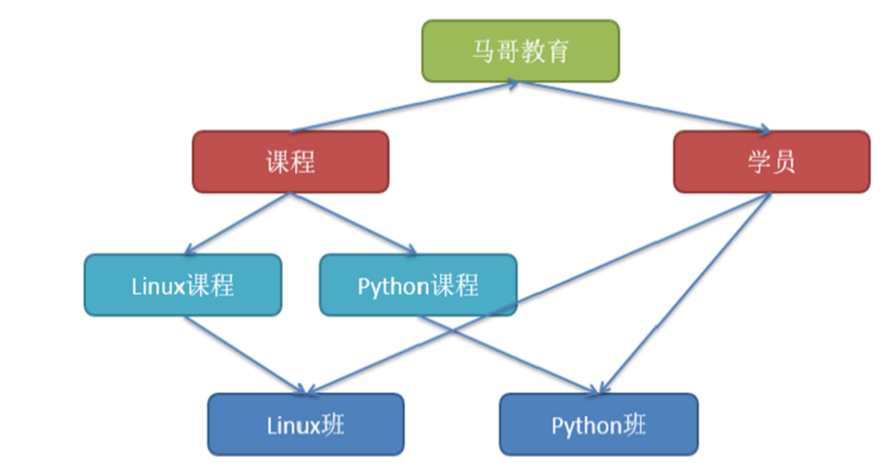
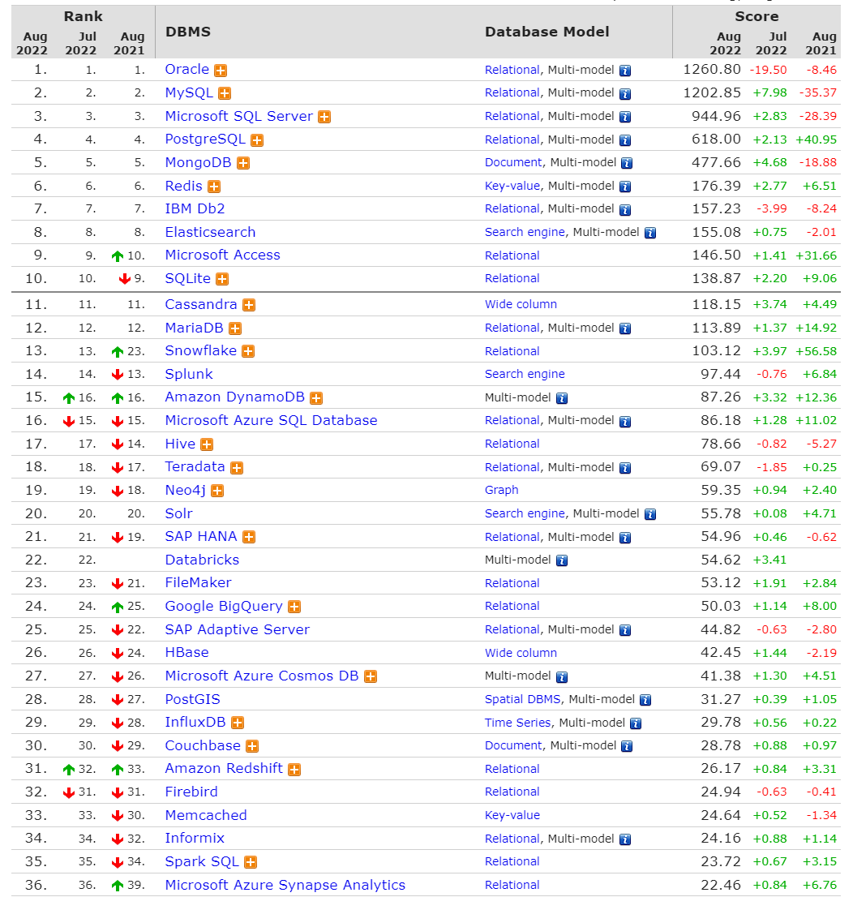
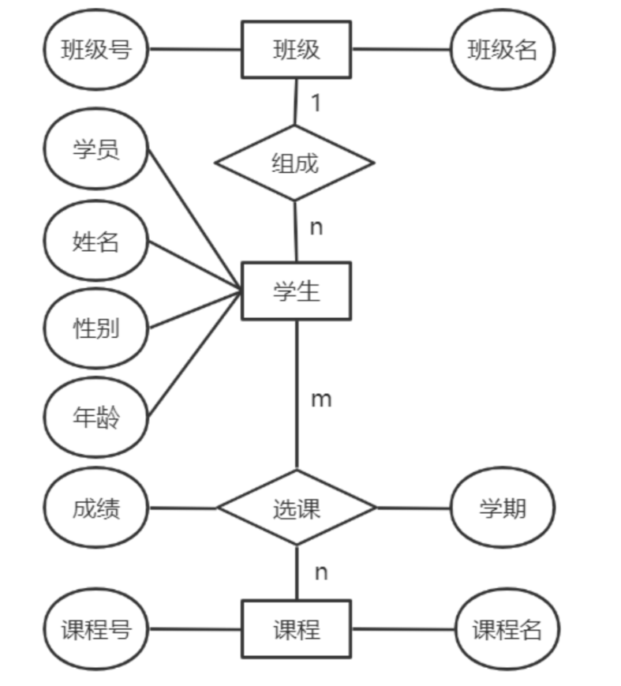

mysql
数据库原理 数据库分类
结构化的数据：即有固定格式和有限长度的数据。例如填的表格就是结构化的数据，国籍：中华人民共和国，民族：汉，性别：男，这都叫结构化数据
非结构化的数据：非结构化的数据越来越多，就是不定长、无固定格式的数据，例如: 网页,图片文件，有时候非常大，有时候很小；例如语音，视频都是非结构化的数据
半结构化数据：比如：XML或者HTML的格式的数据
数据库的发展史 数据库与芯片,操作系统并列为计算机技术的三大件,也是企业IT系统必不可少的核心技术
数据库系统发展阶段
使用磁盘文件来存储数据
出现了网状模型、层次模型的数据库
关系型数据库和结构化查询语言
“关系-对象”型数据库
文件管理系统的缺点
编写应用程序不方便
不支持对文件的并发访问
无安全控制功能
难以按用户视图表示数据
数据间联系弱
数据冗余不可避免
应用程序依赖性
数据库管理系统 相关概念
Database：数据库是数据的汇集，它以一定的组织形式存于存储介质上
DBMS：Database Management System, 是管理数据库的系统软件，它实现数据库系统的各种功能。是数据库系统的核心
DBA：Database Administrator, 负责数据库的规划、设计、协调、维护和管理等工作
Application：应用程序,指以数据库为基础的应用程序
数据库管理系统的优点
程序与数据相互独立
保证数据的安全、可靠
最大限度地保证数据的正确性
数据可以并发使用并能同时保证一致性
相互关联的数据的集合
较少的数据冗余
数据库管理系统的基本功能
各种数据库管理系统 层次数据库 
分层结构由IBM在20世纪60年代开发，并在早期大型机DBMS中使用。记录的关系形成了一个树状模型。这种结构简单，但缺乏灵活性，因为这种关系仅限于一对多关系。
代表数据库：IBM IMS(信息管理系统
网状数据库 
1964年通用电气GE公司的 Charles Bachman 成功地开发出世界上第一个网状数据库IDS(集成数据存储)，IDS 具有数据模式和日志的特征，只能在GE主机运行
关系型数据库 RDBMS Relational Database Management System,关系模型最初由IBM公司的英国计算机科学家埃德加·科德(Edgar F. Codd)于1969年描述
1974年，IBM开始开发系统R，这是一个开发RDBMS原型的研究项目。
然而，第一个商业上可用的RDBMS是甲骨文，于1979年由关系软件（现为甲骨文oracle公司）发布
关系统型数据库相关概念
关系Relational ：关系就是二维表，其中：表中的行、列次序并不重要
行row：表中的每一行，又称为一条记录record
列column：表中的每一列，称为属性，字段，域field
主键Primary key：PK ,一个或多个字段的组合, 用于惟一确定一个记录的字段，一张表只有一个主键, 主键字段不能为空NULL
唯一键Unique key: 一个或多个字段的组合,用于惟一确定一个记录的字段,一张表可以有多个UK,而 且UK字段可以为NULL
域domain：属性的取值范围，如，性别只能是’男’和’女’两个值，人类的年龄只能0-150
常用关系数据库
MySQL: MySQL, MariaDB, Percona Server
PostgreSQL: 简称为pgsql，EnterpriseDB
Oracle
MSSQL Server
DB2
数据库排名 https:// db-engines.com/en/ ranking

关系型数据库理论 实体-联系模型E-R E-R模型即实体-关系模型﹐E-R模型就是描述数据库存储数据的结构模型
对于大型公司开发项目﹐需要根据产品经理的设计﹐先使用建模工具,如:power designer ,db desinger
等这些软件来画出实体-关系模型(E-R模型)
实体Entity：客观存在并可以相互区分的客观事物或抽象事件称为实体即表,在E-R图中用矩形表示
实体，把实体名写在框内
属性Attribute：实体所具有的特征或性质,描述实体里面的单个信息, 使用椭圆形表示
联系Relationship：描述了实体的属性之间的关联规则
实体内部的联系：指组成同一个实体内的各属性之间的联系。如职工实体中，职工号和部门经理号之间有一种关联关系
实体之间的联系：指不同实体之间的属性的联系。例：学生选课实体和学生基本信息实体之间
实体之间的联系用菱形框表示
E-R 模型范例:

联系类型
一对一联系(1:1): 在表A或表B中创建一个字段﹐存储另一个表的主键值 如: 一个人只有一个身份证
一对多联系(1:n)：外键, 如: 部门和员工
多对多联系(m:n)：增加第三张表, 如: 学生和课程
数据的操作 开发工程师 CRUD (增加Create、查询Read或 Retrieve、更新Update、 删除Delete)
数据提取：在数据集合中提取感兴趣的内容。SELECT
数据更新：变更数据库中的数据。INSERT、DELETE、UPDATE
数据库的正规化分析 数据库规范化，又称数据库或资料库的正规化、标准化，是数据库设计中的一系列原理和技术，以减少数据库中数据冗余，增进数据的一致性。关系模型的发明者埃德加·科德最早提出这一概念，并于1970年代初定义了第一范式、第二范式和第三范式的概念设计关系数据库时，遵从不同的规范要求，设计出合理的关系型数据库，不同的规范要求被称为不同范式，各种范式呈递次规范，越高的范式数据库冗余越小目前关系数据库有六种范式：第一范式（1NF）、第二范式（2NF）、第三范式（3NF）、巴德斯科范式（BCNF）、第四范式(4NF）和第五范式（5NF，又称完美范式）。满足最低要求的范式是第一范式（1NF）。在第一范式的基础上进一步满足更多规范要求的称为第二范式（2NF），其余范式以次类推。一般数据库只需满足第三范式(3NF）即可
规则是死的,人是活的,所以范式是否必须遵守,要看业务需要而定
掌握范式的目的是为了在合适的场景下违反范式
第一范式：1NF 无重复的列，每一列都是不可分割的基本数据项，同一列中不能有多个值，即实体中的某个属性不能有多个值或者不能有重复的属性，确保每一列的原子性。除去同类型的字段，就是无重复的列
说明：第一范式（1NF）是对关系模式的基本要求，不满足第一范式（1NF）的数据库就不是关系数据库
第二范式：2NF 第二范式必须先满足第一范式，属性完全依赖于主键，要求表中的每个行必须可以被唯一地区分，通常为表加上每行的唯一标识主键PK，非PK的字段需要与整个PK有直接相关性,即非PK的字段不能依赖于部分主键
第三范式：3NF 满足第三范式必须先满足第二范式属性，非主键属性不依赖于其它非主键属性。第三范式要求一个数据表中不包含已在其它表中已包含的非主关键字信息，非PK的字段间不能有从属关系
SQL 结构化查询语言简介 SQL：Structure Query Language,结构化查询语言是1974年由Boyce和Chamberlin提出的一个通用的、功能极强的关系性数据库语言
SQL解释器：将SQL语句解释成机器语言
数据存储协议：应用层协议，C/S
S：server, 监听于套接字，接收并处理客户端的应用请求
C：Client
客户端程序接口
应用编程接口
ODBC：Open Database Connectivity
JDBC：Java Data Base Connectivity
MySQL安装和基本使用 MySQL 介绍 mysql历史 MySQL的历史可以追溯到1979年，它的创始人叫作Michael Widenius，他在开发一个报表工具的时候，设计了一套API，后来他的客户要求他的API支持sql语句，他直接借助于mSQL（当时比较牛）的代码，将它集成到自己的存储引擎中。但是他总是感觉不满意，萌生了要自己做一套数据库的想法。
直到1996年，MySQL 1.0发布，Michael Widenius的大女儿的简称就是MY，Michael Widenius大概也是把MySQL当成自己的女儿一样来对待.仅仅过了几个月的时间，1996年10月MySQL 3.11.1当时发布了Solaris的版本，一个月后，linux的版本诞生，从那时候开始，MySQL慢慢的被人所接受。
1999年，Michael Widenius成立了MySQL AB公司，MySQL由个人开发转变为团队开发，2000年使用GPL协议开源。
2001年，MySQL生命中的大事发生了，那就是存储引擎InnoDB的诞生！Oracle在2005年收购了InnoDB，只不过InnoDB一直以来都只能作为第三方插件供用户选择。直到现在，MySQL可以选择的众多存储引擎中，InnoDB依然是第一选择
2008年1月，MySQL AB公司被Sun公司以10亿美金收购，MySQL数据库进入Sun时代。Sun为MySQL的发展提供了绝佳的环境，2008年11月，MySQL 5.1发布，MySQL成为了最受欢迎的小型数据库。
2009年4月，Oracle公司以74亿美元收购Sun公司，MySQL也随之进入Oracle时代。
2010年12月，MySQL 5.5发布，Oracle终于把InnoDB做成了MySQL默认的存储引擎，MySQL从此进入了辉煌时代。
然而，从那之后，Oracle对MySQL的态度渐渐发生了变化，Oracle虽然宣称MySQL依然尊少GPL协议，但却暗地里把开发人员全部换成了Oracle自己人，开源社区再也影响不了MySQL发展的脚步，真正有心做贡献的人也被拒之门外，MySQL随时都有闭源的可能……
看着自己辛苦养大的MySQL被Oracle搞成这样，Michael Widenius非常失望，决定在MySQL走向闭源前，将MySQL进行分支化，依然是使用了自己小女儿的名字MariaDB（玛莉亚DB）。
MariaDB数据库管理系统是MySQL的一个分支，主要由开源社区在维护，采用GPL授权许可 MariaDB的目的是完全兼容MySQL，包括API和命令行，使之能轻松成为MySQL的代替品。在存储引擎方面，使用XtraDB来代替MySQL的InnoDB。
MariaDB由MySQL的创始人Michael Widenius主导，由开源社区的大神们进行开发。因此，大家都认为，MariaDB拥有比MySQL更纯正的MySQL血脉。
最初的版本更新与MySQL同步，相对MySQL5以后的版本，MariaDB也有相应的5.1~5.5的版本。后来MariaDB终于摆脱了MySQL，它的版本号直接从10.0开始，以自己的步伐进行开发，当然，还是可以对MySQL完全兼容
MySQL大事记
1 2 3 4 5 6 7 8 9 10 11 12 13 1979 年：TcX公司 Monty Widenius，Unireg 1996 年：发布MySQL1.0，Solaris版本，Linux版本 1999 年：MySQL AB公司，瑞典 2003 年：MySQL 5.0 版本，提供视图、存储过程等功能 2008 年：Sun公司 以10亿美元收购MySQL 2009 年：Oracle公司以 74 亿美元收购 sun 公司 2009 年：Monty成立MariaDB
MySQL系列 MySQL 的三大主要分支
MySQL
Mariadb
Percona Server
官网 https://www.mysql.com/
http://mariadb.org/
https://www.percona.com
官方文档 https://dev.mysql.com/doc/
https://mariadb.com/kb/en/
https://www.percona.com/software/mysql-database/percona-server
MySQL的特性
开源免费
插件式存储引擎：也称为”表类型”，存储管理器有多种实现版本，功能和特性可能均略有差别；用户可根据需要灵活选择,Mysql5.5.5开始innoDB引擎是MYSQL默认引擎
mysql安装方式介绍和快速安装 安装方式介绍 程序包管理器管理的程序包
源代码编译安装
二进制格式的程序包：展开至特定路径，并经过简单配置后即可使用
RPM安装MySQL CentOS 安装光盘
项目官方：https://downloads.mariadb.org/mariadb/repositories/
国内镜像：https://mirrors.tuna.tsinghua.edu.cn/mariadb/yum/
https://mirrors.tuna.tsinghua.edu.cn/mysql/yum/
CentOS 8：安装光盘直接提供
mysql-server：8.0
mariadb-server : 10.3
CentOS 7：安装光盘直接提供
mariadb-server：5.5 服务器包
mariadb 客户端工具包
CentOS 6：
mysql-server：5.1 服务器包
mysql 客户端工具包
CentOS 7 利用yum源安装MySQL5.7** 1 2 3 4 5 6 7 8 9 10 11 12 13 14 15 16 17 18 19 20 21 22 23 24 25 26 27 28 29 30 31 32 33 34 35 36 37 38 39 40 41 42 43 44 45 46 47 48 49 50 51 52 53 54 55 56 57 58 59 60 61 62 63 64 65 66 67 68 69 70 71 72 73 74 75 76 77 78 79 80 81 82 83 84 85 86 87 88 89 90 [root@centos7 ~]#tee /etc/yum.repos.d/mysql.repo <<EOFname =mysql5.7baseurl =https://mirrors.tuna.tsinghua.edu.cn/mysql/yum/mysql-5.7-community-el7-gpgcheck =0enable --now mysqld Peer Address:Port ERROR 1045 (28000): Access denied for user 'root' @'localhost' (using password: NO )for for user 'root' @'localhost' NO )'pe%b#S8ah)j-' Warning ] Using a password on the command line interface can be insecure.to the MySQL monitor. Commands end with ; or \g. connection id is 4Server version: 5.7.33and /or its affiliates.and /or itsType 'help;' or '\h' for help. Type '\c' to clear the current input statement.ERROR 1820 (HY000): You must reset your password using ALTER USER statement user root@'localhost' identified by 'Magedu2021' ;ERROR 1819 (HY000): Your password does not satisfy the current policy user root@'localhost' identified by 'Magedu0!' ;for Linux (x86_64) using EditLine wrapperConnection id: 4Not in use'' Server version: 5.7.33Server characterset: latin1Client characterset: utf8'pe%b#S8ah)j-' password 'Magedu0!' Warning ] Using a password on the command line interface can be to server in plain text, use ssl connection to ensure password safety.
CentOS 7 利用yum源安装Mariadb 1 https://m ariadb.org/download/
1 2 3 4 5 6 7 8 9 10 11 12 13 14 15 16 17 18 19 20 21 22 23 24 25 26 27 28 29 30 31 32 33 34 35 36 37 38 39 40 41 42 43 44 45 46 47 48 49 50 51 52 53 54 55 56 57 58 59 60 61 62 63 64 65 66 67 68 69 70 71 72 73 74 75 76 77 78 79 80 81 root@centos7 ~ ]mariadb ]name = MariaDB baseurl = https://mirrors.nju.edu.cn/mariadb/yum/10.5/centos7-amd64 gpgkey=https://mirrors.nju.edu.cn/mariadb/yum/RPM-GPG-KEY-MariaDB gpgcheck=1 root@centos7 ~ ]root@centos7 ~ ]root@centos7 ~ ]Welcome to the MariaDB monitor. Commands end with ; or \g. Your MariaDB connection id is 4 Server version: 10.5 .8 -MariaDB MariaDB Server Copyright (c) 2000 , 2018 , Oracle, MariaDB Corporation Ab and others. Type 'help;' or '\h' for help. Type '\c' to clear the current input statement. MariaDB [(none) ]> status -------------- mysql Ver 15.1 Distrib 10.5 .8 -MariaDB, for Linux (x86_64) using readline 5.1 Connection id: 4 Current database: Current user: root@localhost SSL: Not in use Current pager: stdout Using outfile: '' Using delimiter: ; Server: MariaDB Server version: 10.5 .8 -MariaDB MariaDB Server Protocol version: 10 Connection: Localhost via UNIX socket Server characterset: latin1 Db characterset: latin1 Client characterset: utf8 Conn. characterset: utf8 UNIX socket: /var/lib/mysql/mysql.sock Uptime: 2 min 43 sec Threads: 2 Questions: 8 Slow queries: 0 Opens: 16 Open tables: 10 Queries per second avg: 0.049 -------------- MariaDB [(none) ]>
Ubuntu 利用默认仓库安装 MySQL 5.7 1 2 3 4 5 6 7 8 9 10 11 12 13 14 15 16 17 18 19 20 21 22 23 24 25 26 27 28 29 30 31 32 33 34 35 36 37 38 39 40 41 42 43 44 45 46 47 48 49 50 51 52 53 54 55 56 57 58 59 60 61 62 63 64 65 66 67 68 69 70 71 72 73 74 75 76 77 78 79 80 81 82 83 84 85 86 87 88 89 [root@ubuntu1804 ~ ]root@ubuntu1804 ~ ]mysql.service - MySQL Community Server Loaded: loaded (/lib/systemd/system/mysql.service; enabled; vendor preset: enabled) Active: active (running) since Wed 2021-01-27 15:41:33 CST; 10min ago Main PID: 2115 (mysqld) Tasks: 28 (limit: 2290 ) CGroup: /system.slice/mysql.service └─2115 /usr/sbin/mysqld --daemonize --pid-file=/run/mysqld/mysqld.pid Jan 27 15 :41:33 ubuntu1804.magedu.org systemd[1]: Starting MySQL Community Server... Jan 27 15 :41:33 ubuntu1804.magedu.org systemd[1]: Started MySQL Community Server. root@ubuntu1804 ~ ]Welcome to the MySQL monitor. Commands end with ; or \g. Your MySQL connection id is 3 Server version: 5.7 .32 -0ubuntu0.18.04.1 (Ubuntu) Copyright (c) 2000 , 2020 , Oracle and/or its affiliates. All rights reserved. Oracle is a registered trademark of Oracle Corporation and/or its affiliates. Other names may be trademarks of their respective owners. Type 'help;' or '\h' for help. Type '\c' to clear the current input statement. mysql> status -------------- mysql Ver 14.14 Distrib 5.7 .32 , for Linux (x86_64) using EditLine wrapper Connection id: 3 Current database: Current user: root@localhost SSL: Not in use Current pager: stdout Using outfile: '' Using delimiter: ; Server version: 5.7 .32 -0ubuntu0.18.04.1 (Ubuntu) Protocol version: 10 Connection: Localhost via UNIX socket Server characterset: latin1 Db characterset: latin1 Client characterset: utf8 Conn. characterset: utf8 UNIX socket: /var/run/mysqld/mysqld.sock Uptime: 10 min 43 sec Threads: 1 Questions: 10 Slow queries: 0 Opens: 105 Flush tables: 1 Open tables: 98 Queries per second avg: 0.015 --------------
初始化脚本提高安全性 1 2 3 4 5 6 7 8 9 运行脚本：mysql_secure_installation员root 口令止root 远程登录
针对MySQL5.6前版本进行安全加固
1 2 3 4 5 6 7 8 9 10 11 12 13 14 15 16 17 18 19 20 21 22 23 24 25 26 27 28 29 30 31 32 33 34 35 36 37 38 39 40 41 42 43 44 45 46 47 48 49 50 51 52 53 54 55 56 57 58 59 60 61 62 63 64 65 66 67 68 69 70 71 72 73 74 75 76 77 78 79 80 81 82 83 84 85 86 87 88 89 90 91 92 93 94 95 96 97 98 99 100 101 102 103 104 105 106 107 108 109 110 111 112 113 114 115 116 117 118 119 120 121 122 123 124 125 126 127 128 129 130 131 132 133 134 135 136 137 138 139 140 141 142 143 144 145 146 147 148 149 150 151 152 153 154 155 156 157 158 159 160 161 162 163 164 165 166 167 168 169 170 171 172 173 174 175 176 177 178 179 180 181 182 183 184 185 186 187 188 189 190 191 192 193 194 195 196 197 198 199 200 201 202 203 204 205 206 207 208 209 210 211 212 213 214 215 216 217 218 219 220 221 222 223 224 225 226 227 root@centos7 ~]to the MySQL monitor. Commands end with ; or \g.id is 2 version : 5.6 .51 MySQL Community Server (GPL)2000 , 2021 , Oracle and /or its affiliates. All rights reserved.is a registered trademark of Oracle Corporation and /or its of their respectiveor '\h' for help. Type '\c' to clear the current input statement.3 rows in set (0.00 sec)from mysql.user;127.0 .0 .1 |1 |6 rows in set (0.00 sec)exit to the MySQL monitor. Commands end with ; or \g.id is 3 version : 5.6 .51 MySQL Community Server (GPL)2000 , 2021 , Oracle and /or its affiliates. All rights reserved.is a registered trademark of Oracle Corporation and /or its of their respectiveor '\h' for help. Type '\c' to clear the current input statement.14.14 Distrib 5.6 .51 , for Linux (x86_64) using EditLine wrapperid : 3 in useversion : 5.6 .51 MySQL Community Server (GPL)version : 10 5 min 2 sec1 Questions: 11 Slow queries: 0 Opens: 67 Flush tables: 1 Open 60 Queries per second avg: 0.036 exit script , ASCII text executableto log into MySQL to secure it , we'll need the currentfor the root user. If you've just installed MySQL, and set the root password yet, the password will be blank,for root (enter for none): on ...the root password ensures that nobody can log into the MySQLwithout the proper authorisation.to log into MySQL without having to have a user account created for is intended only for testing, and to make the installationbefore moving into ato connect from 'localhost'. Thisthat someone cannot guess at the root password from the network.with a database named 'test' that anyone canis also intended only for testing, and should be removedbefore moving into a production environment.and access to it ? [Y/n] y1008 (HY000) at line 1 : Can't drop database 'test'; database doesn't existon test database...the privilege tables will ensure that all changes made so farof the above steps, your MySQLfor using MySQL!
MySQL 组成和常用工具 客户端程序
mysql: 基于mysql协议交互式或非交互式的CLI工具
mysqldump：备份工具，基于mysql协议向mysqld发起查询请求，并将查得的所有数据转换成
insert等写操作语句保存文本文件中
mysqladmin：基于mysql协议管理mysqld
mysqlimport：数据导入工具
MyISAM存储引擎的管理工具：
myisamchk：检查MyISAM库
myisampack：打包MyISAM表，只读
服务器端程序 1 2 3 4 5 mysqld_safe
用户账号 mysql用户账号由两部分组成：
1 2 3 4 5 6 7 'USERNAME' @'HOST' wang@ '10.0.0.100' wang@ '10.0.0.%' wang@ '%
说明：
HOST限制此用户可通过哪些远程主机连接mysql服务器
支持使用通配符：
1 2 3 % 匹配任意长度的任意字符,相当于shell中*, 示例: 172.16 .0 .0 /255.255 .0 .0 或 172.16 .% .%
mysql 客户端命令 mysql 运行命令类型 客户端命令：本地执行，每个命令都完整形式和简写格式
查看版本：
1 2 3 [root@centos8 ~]8.0 .21 for Linux on x86_64 (Source distribution)
1 2 3 4 5 6 7 mysql> \h, help mysql> \u，use mysql> \s，status mysql> \!，system
服务端命令：通过mysql协议发往服务器执行并取回结果，命令末尾都必须使用命令结束符号，默
认为分号
#示例：
mysql>SELECT VERSION();
mysql 使用模式 1 2 3 4 5 6 7 mysql -uUSERNAME -pPASSWORD < /path/ somefile.sql/path/ somefile.sql | mysql -uUSERNAME -pPASSWORDsource /path/ from /somefile.sql
mysql****命令使用格式 1 mysql [OPTIONS] [database]
mysql客户端常用选项：
1 2 3 4 5 6 7 8 9 10 11 12 13 14 15 16 17 18 19 20 21 22 23 -A, --no-auto-rehash 禁止补全--user = 用户名,默认为root--host = 服务器主机,默认为localhostp , --passowrd = 用户密码,建议使用-p ,默认为空密码--port = 服务器端口--socket = 指定连接socket文件路径--database = 指定默认数据库--compress 启用压缩"SQL" 执行SQL命令--version 显示版本--verbose 显示详细信息--print-defaults 获取程序默认使用的配置
登录系统：
运行mysql命令
1 2 3 4 5 6 7 8 9 10 11 mysql>use mysql #切换数据库 select database ()#查看当前数据库 select user ()#查看当前用户 #清屏 #ctrl+d 退出
客户端 mysql 的配置文件，修改提示符
#查看mysql版本
1 2 3 4 5 6 7 8 9 10 11 12 13 14 15 16 17 18 19 20 21 22 23 24 25 26 27 28 29 30 31 32 33 34 35 36 37 38 39 40 41 42 43 44 45 46 47 [root@centos8 ~ ]#mysql - V Ver 15.1 Distrib 10.3 .11 - MariaDB , for Linux (x86_64) using readline 5.1 @centos8 ~ ]#mysql - uroot - pcentos -- prompt= "\\ r:\\ m:\\ s(\\ u@\\ h) [\\ d]>\\ _" @centos8 ~ ]#export MYSQL_PS1 = "\\ r:\\ m:\\ s(\\ u@\\ h) [\\ d]>\\ _" @centos8 ~ ]#vim / etc/ my.cnf.d/ mysql- clients.cnf = "\\ r:\\ m:\\ s(\\ u@\\ h) [\\ d]>\\ _" @centos8 ~ ]#mysql -- print- defaults - v-- prompt= \r:\m:\s(\u@\h) [\d]> \_ - v @centos8 ~ ]#mysql Welcome to the MariaDB monitor. Commands end with ; or \g.Your MariaDB connection id is 11 Server version: 10.3 .11 - MariaDB MariaDB Server Copyright (c) 2000 , 2018 , Oracle , MariaDB Corporation Ab and others.Type 'help;' or '\h' for help. Type '\c' to clear the current input statement.10 :29 :30 (root@localhost ) [(none)]> use mysqlReading table information for completion of table and column namesYou can turn off this feature to get a quicker startup with - A Database changed10 :29 :34 (root@localhost ) [mysql]> exit
配置所有MySQL 客户端的自动登录
1 2 3 4 5 6 7 8 9 10 11 12 13 vim /etc/my.cnf .d/client.cnf [client] 123456 [mysql] [\\d] >\\_
mysqladmin****命令 mysqladmin 命令格式
1 mysqladmin [OPTIONS] command command ....
1 2 3 4 5 6 7 8 9 10 11 12 13 14 15 16 17 18 19 20 21 22 23 #查看mysql服务是否正常，如果正常提示mysqld is alive ping #关闭mysql服务，但mysqladmin命令无法开启 shutdown #创建数据库testdb #删除数据库testdb #修改root密码 'magedu' #日志滚动,生成新文件/var/lib/mysql/mariadb-bin.00000N
mycli MyCLI 是基于Python开发的MySQL的命令行工具，具有自动完成和语法突出显示功能安装
1 2 3 4 5 6 7 8 9 10 11 #CentOS8 安装[root@centos8 ~] #yum install python3-pip -y [root@centos8 ~] #pip3 install mycli #ubuntu 安装[root@ubuntu1804 ~] #apt -y install mycli [root@ubuntu1804 ~] #mycli -u root -S /var /run /mysqld /mysqld .sock
服务器端配置 服务器端配置文件 服务器端(mysqld)：工作特性有多种配置方式
1、命令行选项：
2、配置文件：类ini格式,集中式的配置，能够为mysql的各应用程序提供配置信息
服务器端配置文件：
1 2 3 4 5 /etc/my .cnf /etc/my sql/my.cnf
配置文件格式：
1 2 3 4 5 6 7 8 9 10 11 12 13 14 15 [mysqld] [mysqld_safe] [mysqld_multi] [mysql] [mysqladmin] [mysqldump] [server] [client]
说明
1 2 3 _和- 相同1 ，ON ，TRUE 意义相同， 0 ，OFF ，FALSE 意义相同,无区分大小写
socket 连接说明 官方说明
1 https:// dev.mysql.com/doc/my sql-port-reference/en/my sql-ports-reference-tables.html
服务器监听的两种 socket 地址：
ip socket: 监听在tcp的3306端口，支持远程通信 ，侦听3306/tcp端口可以在绑定有一个或全部接口IP上
unix sock: 监听在sock文件上，仅支持本机通信, 如：/var/lib/mysql/mysql.sock)
说明：host为localhost 时自动使用unix sock
MySQL的端口
1 2 3 4 5 6 7 8 9 10 11 12 13 14 15 16 17 18 19 20 21 22 23 24 25 26 27 28 29 30 31 32 33 mysql> SHOW VARIABLES LIKE 'port'; --------------- +------- +--------------- +------- +--------------- +------- + set (0.01 sec) --------------- +------- +--------------- +------- +--------------- +------- + set (0.00 sec)
关闭mysqld 只侦听本地客户端， 所有客户端和服务器的交互都通过一个socket文件实现，socket的配置存放在/var/lib/mysql/mysql.sock） 可在/etc/my.cnf修改
1 2 3 4 5 6 7 vim /etc/my.cnfskip-networking =1bind_address =127.0.0.1